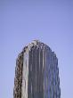
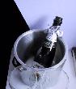

Our check in was pretty efficient, but our seat allocation wasn't great - the middle 2 of a 4 block. I asked if we could be put on the upgrade list as it was our honeymoon and the lady said she'd make a note of it but that they weren't looking to upgrade people.
We went through into departures and got some breakfast before heading to the gate. When our cards were checked we'd been allocated some new seats. It wasn't until we boarded that we realised we'd been upgraded to World Traveller Plus. These seats were great, so much more space. During the flight I started to read the book Cathy and Levi bought me for my birthday - Mrs Dalloway (neither of us had realised that she was a Mrs Richard Dalloway) by Virginia Woolfe.
We treated ourselves to a small bottle of champagne and started our honeymoon in good style.
The flight was pretty good, and we arrived in Boston collected our baggage, cleared customs and caught one of the shuttle buses to the 'T' station. We caught the Blue Line and then the Green to Prudential and then walked to the Encore Bed and Breakfast.
The first thing on the agenda was to have a shower - we'd arrived in the middle of a heat wave and it was 29C. Our host Reinhold had thoughtfully left us a half bottle of Korbel Californian Champagne so we sat out on the balcony enjoying the weather, reading about Boston, talking about the wedding and relaxing.
We decided that it was getting close to dinner time and so we consulted the information that was in the room and chose a restaurant to head for. We first went and walked around the Reflecting Pool, part of the Christian Science Centre, looking at all the different buildings and styles that make up that centre. We then just walked along Huntington Ave for a while, looking at what was around until we arrived at Arlington Street.
The restaurant we'd chosen, Grillfish, was between Arlington and Berkley on Columbus Ave and we had a lovely meal there. We both started to flag and so didn't hang around, just paid the bill, walked back and fell asleep.
(3 images.)|
Christian Science Centre | 
A tower block | 
Champagne |